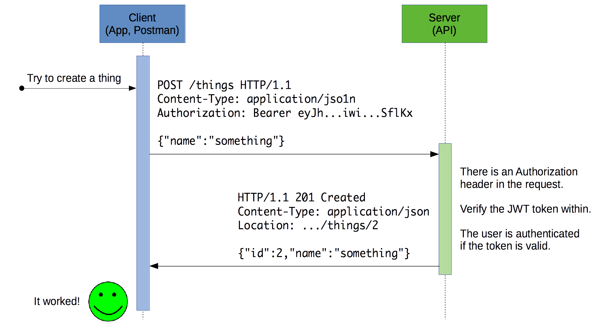

# Express Authentication Learn how to set up authentication with [JSON Web Tokens][jwt] an [Express][express] application. **You will need** * A running [Express][express] application with [Mongoose][mongoose] plugged in **Recommended reading** * [Express](../express/) * [Mongoose](../mongoose/) --- ## Security concepts .breadcrumbs[<a href="#1">Express Authentication</a>] Process | Description :--- | :--- Identification | Occurs when a user claims to have a specific identity, for example by supplying a **username**. Authentication | The process of **proving an identity** by supplying appropriate credentials, such as a **password**, an **authentication token**, or by using a **public key** with asymmetric cryptography. Authorization | The process of **verifying that you have access to something**, such as a specific resource. For example, a user may have the right to edit their own posts in a social application, but not the posts of another user. In this presentation, we'll focus on setting up **authentication** with [bcrypt][bcrypt] and [JSON Web Tokens][jwt]. --- ## Storing passwords securely .breadcrumbs[<a href="#1">Express Authentication</a>] It's a bad idea to store your users' passwords in clear. If your database is compromised, not only will your application be compromised, but others may be as well if users have used the same passwords elsewhere. A better way is to use a [cryptographic hash function][hash]. --- ### What is a hash function? .breadcrumbs[<a href="#1">Express Authentication</a> > <a href="#3">Storing passwords securely</a>] .grid-50[ A [hash function][hash-function] maps **data of arbitrary size** to **data of a fixed size**. The value returned by a hash function is called a hash value, a **digest**, or simply a hash. <img class='w100' src='images/hash-function-example.png' /> ] .grid-50[ <img class='w100' src='images/hash-function.jpg' /> ] --- ### Hashing is not encryption .breadcrumbs[<a href="#1">Express Authentication</a> > <a href="#3">Storing passwords securely</a>] .grid-50[ <p class='center'><strong>Encryption</strong></p> <img class='w100' src='images/encryption-example.gif' /> ] .grid-50[ <p class='center'><strong>Hashing</strong></p> <img class='w100' src='images/hashing-example.gif' /> ] --- ### Cryptographic hash functions .breadcrumbs[<a href="#1">Express Authentication</a> > <a href="#3">Storing passwords securely</a>] .grid-40[ A [cryptographic hash function][hash] is a [hash function][hash-non-crypto] that has the following properties: * The same message always results in the same hash (**deterministic**). * **Computing** the hash value of any message **is quick**. ] .grid-60[ <img class='w100' src='images/hash.png' /> ] .container[ * It is infeasible to generate a message from its hash value except by trying all possible messages (**one-way**). * A small change to a message should change the hash value so extensively that the new hash value appears uncorrelated with the old hash value. * It is infeasible to find two different messages with the same hash value (collisions). ] --- ### Storing hashed passwords .breadcrumbs[<a href="#1">Express Authentication</a> > <a href="#3">Storing passwords securely</a>] The properties of a hash function make it suitable for securely verifying users' passwords without actually storing them: * When the user **registers** the first time, their password is hashed. **Only the hash is stored** in the database. The plain password is not kept. * When the user comes back later to **log in**, the password is passed through the same hash function. **If the hash is the same, the password is the correct one** (in all probability). If the database of such a service is compromised, a hacker does not get the actual passwords, only the hashes, which are not reversible due to the properties of a cryptographic hash function. > This is also why most secure services cannot tell you what your current > password is, because they do not store it. They can only verify that it is the > correct one when you log in. --- #### Salting .breadcrumbs[<a href="#1">Express Authentication</a> > <a href="#3">Storing passwords securely</a> > <a href="#7">Storing hashed passwords</a>] Using only a hash function is vulnerable to [rainbow tables][rainbow-table]: a hacker may precompute the hashes for the most common passwords in advance. With such a table, the password could be deduced from the hash. The addition of a [**salt**][salt] solves this problem. A salt is a random piece of data. In the simplest implementation, it is concatenated with your password before the hash function is applied. ```js // Without salt, vulnerable to rainbow table attacks. hashFunction(password); // With salt, generating rainbow tables for all // possible salts is virtually impossible. const salt = generateRandomBytes(); hashFunction(password + salt); ``` If you generate a different salt for each user account and store it alongside the hashed password, you can reproduce the same hash when the user logs in. Salting makes it impractical to generate rainbow tables because it would require too much computing power and storage, since you would have to generate the tables for all possible salts (a potentially infinite number). --- class: center, middle ## bcrypt .breadcrumbs[<a href="#1">Express Authentication</a>] An adaptive password hashing function. --- ### Using bcrypt to hash a password .breadcrumbs[<a href="#1">Express Authentication</a> > <a href="#9">bcrypt</a>] The [`bcrypt` package][bcrypt-npm] provides an implementation of the [bcrypt][bcrypt] password-hashing function. Simply use its `hash` function to generate a bcrypt hash from a password. ```js const bcrypt = require('bcrypt'); const plainPassword = 'changeme'; const costFactor = 10; bcrypt.hash(plainPassword, costFactor, function(err, hashedPassword) { // Store the hashed password in your database. }); ``` > Creating a password hash is a costly operation, especially if the cost factor of the bcrypt algorithm is high (more than 10). > Do not use the synchronous methods provided by the `bcrypt` package (e.g. `hashSync`), > as they will block execution of your application until they are done. --- #### Using bcrypt with Express and Mongoose .breadcrumbs[<a href="#1">Express Authentication</a> > <a href="#9">bcrypt</a> > <a href="#10">Using bcrypt to hash a password</a>] Here's an example of how to use bcrypt in an Express application using Mongoose for database access. ```js const bcrypt = require('bcrypt'); const User = require('../models/user'); router.post('/', function(req, res, next) { const plainPassword = req.body.password; const costFactor = 10; * bcrypt.hash(plainPassword, costFactor, function(err, hashedPassword) { if (err) { return next(err); } const newUser = new User(req.body); `newUser.password = hashedPassword;` newUser.save(function(err, savedUser) { if (err) { return next(err); } res.send(savedUser); }); * }); }); ``` --- #### Hiding the password hash from API responses .breadcrumbs[<a href="#1">Express Authentication</a> > <a href="#9">bcrypt</a> > <a href="#10">Using bcrypt to hash a password</a>] You don't want your API users to view the password hash. Here's one way to hide it with Mongoose: ```js const userSchema = new Schema({ // ... password: { type: String, required: true } }); *userSchema.set('toJSON', { * transform: transformJsonUser *}); function transformJsonUser(doc, json, options) { * // Remove the hashed password from the generated JSON. * delete json.password; return json; } ``` --- ### Using bcrypt to verify a password .breadcrumbs[<a href="#1">Express Authentication</a> > <a href="#9">bcrypt</a>] The `compare` function takes the following arguments: * The **plain password** to check. * The **hashed password** from your database. The asynchronous callback will be called with **a boolean indicating whether the password matches**. ```js `bcrypt.compare(plainPassword, hashedPassword`, function(err, `valid`) { // Handle error and password validity... }); ``` --- #### Verifying a password with Express and Mongoose .breadcrumbs[<a href="#1">Express Authentication</a> > <a href="#9">bcrypt</a> > <a href="#13">Using bcrypt to verify a password</a>] Here's a password verification example for a hypothetical login route in an Express application using Mongoose: ```js const bcrypt = require('bcrypt'); const User = require('../models/user'); router.post('/login', function(req, res, next) { `User.findOne`({ name: req.body.name }).exec(function(err, user) { if (err) { return next(err); } else if (!user) { return res.sendStatus(401); } `bcrypt.compare(req.body.password, user.password`, function(err, valid) { if (err) { return next(err); } else if (!valid) { return res.sendStatus(401); } // Login is valid... res.send(\`Welcome ${user.name}!`); }); }) }); ``` --- class: center, middle ## Authentication tokens .breadcrumbs[<a href="#1">Express Authentication</a>] --- ### What is an authentication token? .breadcrumbs[<a href="#1">Express Authentication</a> > <a href="#15">Authentication tokens</a>] An authentication token allows a user to authenticate to a server without sending his or her credentials at every request. It is an alternative to cookies, with the following advantages: * Tokens are **stateless**. A token contains all the information it needs for authentication, freeing your server from managing sessions. * Tokens can be **generated from anywhere**, allowing you the option to handle the signing and verification of tokens on different servers. * **Fine-grained access control**. The token payload can contain specific user roles and permissions. --- ### JSON Web Token (JWT) .breadcrumbs[<a href="#1">Express Authentication</a> > <a href="#15">Authentication tokens</a>] A [JSON Web Token][jwt] is a special format for authentication tokens: <p class='center'><img class='w100' src='images/jwt.png' /></p> --- #### What's in a JWT? .breadcrumbs[<a href="#1">Express Authentication</a> > <a href="#15">Authentication tokens</a> > <a href="#17">JSON Web Token (JWT)</a>] A JWT contains: * A header indicating the **hashing algorithm** and other JWT configuration properties. * A **payload** containing the **authentication claims**, i.e. who is the authenticated user. * A **signature** which is a [HMAC][hmac] of the previous 2 parts of the token, based on a **secret** known only by the server. Since the signature is tied to the contents of the token, and HMAC uses cryptographic hash functions which are not reversible: * An attacker cannot create a valid JWT token unless he knows the secret. * Nor can he modify an existing token while keeping the signature valid. --- #### JWT claims .breadcrumbs[<a href="#1">Express Authentication</a> > <a href="#15">Authentication tokens</a> > <a href="#17">JSON Web Token (JWT)</a>] The properties of the payload should be [**registered claims**][jwt-claims]. These are some of the most common claims (all are optional): Claim | Description :--- | :--- `iss` | Issuer `sub` | Subject (e.g. the ID of the authenticated user) `aud` | Audience `exp` | Expiration time (UNIX timestamp) `nbf` | Not before `iat` | Issued at For example, a very simple token might only contain `sub` to indicate the authenticated user, and `exp` for an expiration date. > New claims should either be registered, or use a collision-resistant name such as a URL, e.g. `https://my-api.com/jwt/claims/custom`. --- #### JWT best practices .breadcrumbs[<a href="#1">Express Authentication</a> > <a href="#15">Authentication tokens</a> > <a href="#17">JSON Web Token (JWT)</a>] * **Keep it secret. Keep it safe.** The signing key should be treated like any other credentials and revealed only to services that absolutely need it. It should not be put under version control. * **Do not add sensitive data to the payload.** Tokens are signed to protect against manipulation and are easily decoded. Add the bare minimum number of claims to the payload for best performance and security. * **Give tokens an expiration.** Technically, once a token is signed, it is valid forever, unless the signing key is changed or expiration explicitly set. This could pose potential issues so have a strategy for expiring and/or revoking tokens. * **Embrace HTTPS.** Do not send tokens over non-HTTPS connections as those requests can be intercepted and tokens compromised. --- ### The `jsonwebtoken` package .breadcrumbs[<a href="#1">Express Authentication</a> > <a href="#15">Authentication tokens</a>] Generating a JWT is trivial with the `jsonwebtoken` npm package: ```js const jwt = require('jsonwebtoken'); // Retrieve the secret key from your configuration. const secretKey = process.env.SECRET_KEY || 'changeme'; // UNIX timstamp representing a date in 7 days. const exp = Math.floor(Date.now() / 1000) + 7 * 24 * 3600; // Create and sign a token. *jwt.sign({ sub: 'userId42', exp: exp }, secretKey, function(err, token) { * // Use the signed token... *}); ``` Verifying it is just as easy: ```js const jwt = require('jsonwebtoken'); // Retrieve the secret key from your configuration. const secretKey = process.env.SECRET_KEY || 'changeme'; // Create and sign a token. *jwt.verify(token, secretKey, function(err, payload) { * // Use the signed token... *}); ``` --- class: center, middle ## Authentication flow .breadcrumbs[<a href="#1">Express Authentication</a>] How a typical API using JWTs for authentication could behave. --- #### Unauthorized client .breadcrumbs[<a href="#1">Express Authentication</a> > <a href="#22">Authentication flow</a>] On the first try, the user does not provide any authentication: <img class='w100' src='images/auth-seq-401.png' /> --- #### Login .breadcrumbs[<a href="#1">Express Authentication</a> > <a href="#22">Authentication flow</a>] Since the server indicated that authentication is missing, the user will send his or her credentials to obtain a new JWT: <img class='w100' src='images/auth-seq-login.png' /> --- #### Authenticated request .breadcrumbs[<a href="#1">Express Authentication</a> > <a href="#22">Authentication flow</a>] Now that the user is in possession of a valid JWT token, he or she can send it as a bearer token in the `Authorization` header to authenticate:  --- #### Full flow .breadcrumbs[<a href="#1">Express Authentication</a> > <a href="#22">Authentication flow</a>] This is a summary of the general principle: * The user sends his or her credentials to obtain a JWT. * The JWT is sent as authentication for all requests to protected resources. <img class='w100' src='images/auth-seq-full.png' /> --- class: center, middle ## Sample code .breadcrumbs[<a href="#1">Express Authentication</a>] A little help. --- ### Sample login route .breadcrumbs[<a href="#1">Express Authentication</a> > <a href="#27">Sample code</a>] ```js const bcrypt = require('bcrypt'); const jwt = require('jsonwebtoken'); const User = require('../models/user'); const secretKey = process.env.SECRET_KEY || 'changeme'; router.post('/login', function(req, res, next) { // Find the user by name. User.findOne({ name: req.body.name }).exec(function(err, `user`) { if (err) { return next(err); } else if (!user) { return res.sendStatus(401); } // Validate the password. bcrypt.compare(req.body.password, user.password, function(err, `valid`) { if (err) { return next(err); } else if (`!valid`) { return res.sendStatus(401); } // Generate a valid JWT which expires in 7 days. const exp = Math.floor(Date.now() / 1000) + 7 * 24 * 3600; const payload = { sub: `user._id.toString()`, exp: exp }; jwt.sign(payload, secretKey, function(err, token) { if (err) { return next(err); } res.send({ token: token }); // Send the token to the client. }); }); }) }); ``` --- ### Sample Express JWT authentication middleware .breadcrumbs[<a href="#1">Express Authentication</a> > <a href="#27">Sample code</a>] ```js const User = require('../models/user'); const secretKey = process.env.SECRET_KEY || 'changeme'; function authenticate(req, res, next) { // Ensure the header is present. const authorization = req.get('Authorization'); if (!authorization) { return res.status(401).send('Authorization header is missing'); } // Check that the header has the correct format. const match = authorization.match(/^Bearer (.+)$/); if (!match) { return res.status(401).send('Authorization header is not a bearer token'); } // Extract and verify the JWT. const token = match[1]; jwt.verify(token, secretKey, function(err, payload) { if (err) { return res.status(401).send('Your token is invalid or has expired'); } else { req.currentUserId = payload.sub; next(); // Pass the ID of the authenticated user to the next middleware. } }); } ``` --- #### Using the authentication middleware .breadcrumbs[<a href="#1">Express Authentication</a> > <a href="#27">Sample code</a> > <a href="#29">Sample Express JWT authentication middleware</a>] The previous middleware can simply be plugged into routes which require authentication: ```js router.post('/things', `authenticate`, function(req, res, next) { // If we reach this function, the previous authentication middleware // has done its job, i.e. a valid JWT was in the Authorization header. const currentUserId = req.currentUserId; // Do what needs to be done... }); ``` > If you need the whole user object, you can always find it from the ID with `User.findById` or `User.findOne`. You may also use an existing library which will verify the token for you instead of writing the code yourself, like [express-jwt][express-jwt]. --- class: center, middle ## Authorization .breadcrumbs[<a href="#1">Express Authentication</a>] <p class='center'><img class='w80' src='images/access-denied.jpg' /></p> --- ### Enforcing permissions .breadcrumbs[<a href="#1">Express Authentication</a> > <a href="#31">Authorization</a>] Even once you have made sure the user is **authenticated**, your job is not necessarily done. You may still have to check whether the user is **authorized** to perform the action. For example, let's assume a user can only modify the things he or she created. When a thing is modified, you have to check **whether the currently authenticated user is the one who actually created that thing**. --- #### Checking the owner .breadcrumbs[<a href="#1">Express Authentication</a> > <a href="#31">Authorization</a> > <a href="#32">Enforcing permissions</a>] Here's an example of how you could do that: ```js router.put('/things/:id', `authenticate`, function(req, res, next) { // Get the thing. Thing.findById(req.params.id).exec(function(err, thing) { if (err) { return next(err); } // Check authorization: was this thing created by the authenticated // user (good), or by another user (bad)? if (`req.currentUserId !== thing.user.toString()`) { return res.status(403).send('Please mind your own things.') } // Do what needs to be done... }); }); ``` --- ### Using roles .breadcrumbs[<a href="#1">Express Authentication</a> > <a href="#31">Authorization</a>] If your application requires more advanced permissions than just checking the owner, you can define simple static **roles**, such as "administrator"; or you can go all the way and define individual permissions and roles that can be dynamically configured in your database. In both cases, an interesting property of JWTs is that you can store anything in them, such as a user's permissions: ```js const payload = { exp: Math.floor(Date.now() / 1000) + 7 * 24 * 3600, // Expire in 7 days. sub: user._id.toString(), // The subject (who is authenticated). * scope: 'admin' // Include permissions in the payload. }; jwt.sign(payload, secretKey, function(err, token) { if (err) { return next(err); } res.send({ token: token }); // Send the token to the client. }); ``` > The `scope` claim is an officially [registered claim][jwt-claims] which was > defined in [RFC 8693 OAuth 2.0 Token Exchange][jwt-scope]. --- #### Extracting roles from the JWT .breadcrumbs[<a href="#1">Express Authentication</a> > <a href="#31">Authorization</a> > <a href="#34">Using roles</a>] To use the roles or permissions you have defined, you must extract them from the JWT when verifying it, and pass it further along the middleware chain just like the subject. You could modify the `authenticate` middleware to do this: ```js // Extract and verify the JWT. const token = match[1]; jwt.verify(token, secretKey, function(err, payload) { if (err) { return res.status(401).send('Your token is invalid or has expired'); } else { // Attach authentication information to the // request for the next middleware. req.currentUserId = payload.sub; * // Obtain the list of permissions from the "scope" claim. * const scope = payload.scope; * req.currentUserPermissions = scope ? scope.split(' ') : []; next(); } }); ``` --- #### Writing an authorization middleware .breadcrumbs[<a href="#1">Express Authentication</a> > <a href="#31">Authorization</a> > <a href="#34">Using roles</a>] You could write a simple factory function to create Express middlewares that check whether a user has a role or permission: ```js function authorize(requiredPermission) { // Create an return an authorization middleware. The required permission // will be available in the returned function because it is a closure. return function authorizationMiddleware(req, res, next) { if (!req.currentUserPermissions) { // The user is not authenticated or has no permissions. return res.sendStatus(403); } const authorized = req.currentUserPermissions.includes(requiredPermission); if (!authorized) { // The user is authenticated but does not have the required permission. return res.sendStatus(403); } // The user is authorized. next(); }; } ``` --- #### Enforcing roles .breadcrumbs[<a href="#1">Express Authentication</a> > <a href="#31">Authorization</a> > <a href="#34">Using roles</a>] You can then use this function to add authorization middleware to your routes. For example, you could require a specific permission before allowing access to a route: ```js router.put( '/protected/route', // Authenticate before authorization. authenticate, // Ensure only administrators can access this route. `authorize('admin')`, function(req, res, next) { // Do admin stuff... } ); ``` You may also use an existing library which will verify permissions for you instead of writing the code yourself, like [express-jwt-permissions][express-jwt-permissions]. --- #### Augmenting permissions .breadcrumbs[<a href="#1">Express Authentication</a> > <a href="#31">Authorization</a> > <a href="#34">Using roles</a>] Or you could use a role to grant further permissions to a route accessible by normal users. For example, a user may not be able to edit another user's things, but maybe an administrator is allowed to: ```js // All authenticated users can access this route. router.put('/things/:id', `authenticate`, function(req, res, next) { // Get the thing. Thing.findById(req.params.id).exec(function(err, thing) { if (err) { return next(err); } * // The user is authorized to edit the thing only if he or she is * // the owner of the thing, or if he or she is an administrator. * const authorized = * req.currentUserPermissions.includes('admin') || * req.currentUserId === thing.user.toString(); * * if (!authorized) { * return res.status(403).send('Please mind your own things.') * } // Do what needs to be done... }); }); ``` --- ## References .breadcrumbs[<a href="#1">Express Authentication</a>] * [Token-based authentication made easy](https://auth0.com/learn/token-based-authentication-made-easy/) * [JWT introduction](https://jwt.io/introduction/) * [We’re under attack! 23+ Node.js security best practices](https://medium.com/@nodepractices/were-under-attack-23-node-js-security-best-practices-e33c146cb87d) --- ## TODO .breadcrumbs[<a href="#1">Express Authentication</a>] * bcrypt cost factor * PBKDF2 alternative [bcrypt]: https://en.wikipedia.org/wiki/Bcrypt [bcrypt-npm]: https://www.npmjs.com/package/bcrypt [express]: https://expressjs.com [express-jwt]: https://github.com/auth0/express-jwt [express-jwt-permissions]: https://www.npmjs.com/package/express-jwt-permissions [hash]: https://en.wikipedia.org/wiki/Cryptographic_hash_function [hash-function]: https://en.wikipedia.org/wiki/Hash_function [hash-non-crypto]: https://en.wikipedia.org/wiki/Hash_function [hmac]: https://en.wikipedia.org/wiki/HMAC [jwt]: https://jwt.io [jwt-claims]: https://www.iana.org/assignments/jwt/jwt.xhtml [jwt-scope]: https://tools.ietf.org/html/rfc8693#section-4.2 [mongoose]: https://mongoosejs.com [rainbow-table]: https://en.wikipedia.org/wiki/Rainbow_table [salt]: https://en.wikipedia.org/wiki/Salt_(cryptography)